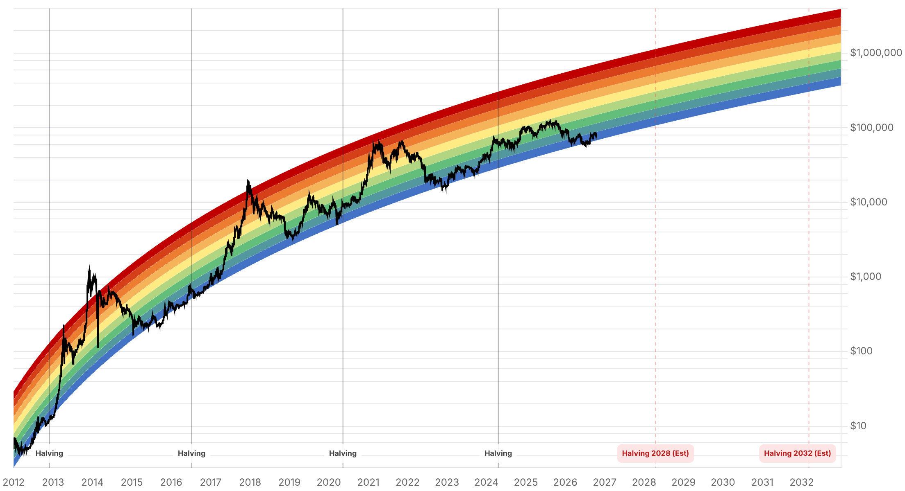

Reporte financiero
BTC cotiza en USD 81.504,94 en vivo (07:23 UTC), prácticamente plano frente al cierre anterior (USD 81.501,61, +0,004%), pero casi un 1% por debajo del precio en vivo de ayer (USD 82.121,79) -el rebote de ayer perdió algo de fuerza durante la noche-. El Fear & Greed Index acompaña ese enfriamiento, retrocediendo de 63 (Greed) a 55 (Greed): sigue en zona de codicia, pero 8 puntos más moderado que ayer. La novedad más concreta del día es una cifra ya cerrada y verificada para la caída del 15 de octubre: CoinGlass confirma USD 948M en liquidaciones en 24h, 90,6% posiciones largas, afinando el rango de USD 900-1.000M que el reporte de ayer citaba como estimación temprana (CryptoTimes). Además, el mínimo de esa sesión (USD 79.711, según datos de Decrypt/TradingView) perforó brevemente el nivel de USD 80.108 que Crypto Patel señalaba como gatillo de una caída hacia USD 70.000-65.000 -pero el precio revirtió con fuerza y no hubo cierre diario confirmado por debajo de ese nivel, por lo que la señal bajista de Patel no se activó-. El resto de los ejes no tiene novedad verificable hoy: no se encontró una cifra de flujo de ETF spot de BTC específica para el 16 de octubre (a diferencia de los días 14 y 15, ya confirmados ayer); Strategy/Saylor sigue en 848.250 BTC sin compra nueva; Tether/Cantor Fitzgerald sigue sin respuesta pública, con el plazo del senador Blumenthal venciendo en 6 días (23 de octubre); y las probabilidades de la reunión de la Fed del 27-28 de octubre siguen sin una fuente de consenso confiable -las mismas cifras contradictorias de ayer entre Manifold (~15-22% de recorte) y Polymarket (~22% implícito) siguen siendo lo más reciente disponible-.
Tras recuperar la zona de USD 82.000 ayer, Bitcoin retrocedió durante la noche y hoy cotiza en vivo en USD 81.504,94 -prácticamente plano frente al cierre de hoy (USD 81.501,61, +0,004%), pero casi 1% por debajo del precio en vivo reportado ayer (USD 82.121,79)-. El Fear & Greed Index refleja el mismo enfriamiento, bajando de 63 (Greed) a 55 (Greed): el mercado sigue del lado optimista, pero con menos convicción que ayer.
El reporte de ayer citaba una estimación temprana de USD 900-1.000M en liquidaciones para la caída del 15 de octubre (CryptoTimes). Con datos ya cerrados, CoinGlass (vía Decrypt) confirma USD 948M en liquidaciones en 24h, con 90,6% de las posiciones liquidadas del lado largo -dentro del rango estimado, ahora con una cifra precisa-. Esa misma caída llevó a BTC a un mínimo de USD 79.711, la primera vez en más de un mes que el precio perforó la zona de USD 80.000 y por debajo del nivel de USD 80.108 que el analista Crypto Patel señalaba como gatillo de una caída hacia USD 70.000-65.000. Sin embargo, el precio revirtió con fuerza dentro del mismo día y no hubo un cierre diario confirmado por debajo de ese nivel, por lo que la señal bajista de Patel se puso a prueba pero no se activó formalmente.
Según análisis técnico de Decrypt sobre datos de mercado de hoy, la resistencia diaria se ubica en USD 81.603 y la media móvil de 50 días en USD 80.407 (perforada brevemente el 15-oct). La media de 200 días está en USD 75.759, cerca de 8% por debajo del precio actual -con la de 50 días todavía por encima de la de 200, la lectura de tendencia de largo plazo sigue siendo alcista pese a la corrección reciente-. El ADX está en 25,5 (apenas por encima del umbral de tendencia de 25, con vendedores liderando) y el RSI en 48,9 (neutral, con leve sesgo bajista). Un mercado de predicción (Myriad) asigna 31% de probabilidad a que BTC toque USD 87.500 en octubre (bajando de 45% el martes pasado) y 43% a que caiga a USD 77.500; la probabilidad de que cotice entre USD 80.000 y 82.000 esta semana es de 62%.
A diferencia de los días 14 y 15 de octubre, ya confirmados en el reporte de ayer vía Farside Investors y SoSoValue, la búsqueda de hoy no encontró una cifra específica de flujo neto de ETF spot de BTC para el 16 de octubre en fuentes verificables. Se deja constancia de esto en vez de inventar un número -se revisará en el próximo reporte.
Strategy permanece en 848.250 BTC, sin compra nueva desde las 250 BTC reportadas el 12 de octubre. El plazo del senador Blumenthal para que Cantor Fitzgerald responda sobre su participación del 5% en Tether vence en 6 días (23 de octubre), sin pronunciamiento público de ninguna de las dos partes. Tampoco hay avance en la Clarity Act ni en el ETF de Bitcoin/Ether de Tailandia. Las probabilidades de la reunión de la Fed del 27-28 de octubre siguen sin una fuente de consenso verificable hoy -las mismas cifras contradictorias de ayer entre Manifold (~15-22% de recorte) y Polymarket (~22% implícito a un recorte) son lo más reciente disponible, sin un dato nuevo de CME FedWatch.
| Periodo | Valor |
|---|---|
| 11 oct | 83679.47 |
| 12 oct | 81762.56 |
| 13 oct | 83095.13 |
| 14 oct | 81562.49 |
| 15 oct | 82141.46 |
| 16 oct | 81500.8 |
| 17 oct (en vivo) | 81504.94 |
| Periodo | Valor |
|---|---|
| Fear & Greed | 55 |

“A clean breakdown below $80,108 followed by a confirmed HTF candle close could open the door to the 70K-65K downside zone.”
“Advierte objetivos a la baja en USD 75.000, 70.000 e incluso USD 57.000 si el mercado amplio continúa deteriorándose -proyección más especulativa, no corroborada por otras fuentes.”
El mínimo de USD 79.711 del 15 de octubre tocó -sin confirmar con cierre diario- el nivel de USD 80.108 que Crypto Patel marcaba como gatillo bajista, y el precio recuperó terreno hasta la resistencia diaria de USD 81.603 (según Decrypt), aunque sin lograr sostenerse claramente por encima. Un cierre por encima de USD 84.246 abriría camino a USD 85.301/86.644/87.423; un cierre por debajo de USD 81.603 pone en juego USD 80.407/80.365 y luego USD 78.003 y la zona de USD 75.759-75.093 (confluencia con la media de 200 días). El mercado de predicción Myriad le da 62% de probabilidad a que el precio se mantenga entre USD 80.000 y 82.000 esta semana -el escenario de rango lateral, no de ruptura en ningún sentido, es hoy el más probable.
El rango de QCP Capital para el Q4 (USD 80.000-90.000, publicado el 5 de octubre) sigue vigente -el precio actual está hacia el extremo bajo de esa banda, sin ninguna novedad hoy que lo invalide o lo refuerce de forma determinante-. La reunión de la Fed del 27-28 de octubre, las elecciones de medio término del 3 de noviembre y la actualización de refinanciamiento del Tesoro del 4 de noviembre siguen siendo el próximo tramo de catalizadores macro concentrados en menos de dos semanas, sin que las probabilidades de recorte de tasas tengan hoy una fuente de consenso confiable.
Sin cambios en los objetivos de precio de largo plazo ya reportados en ediciones anteriores (Citigroup, Bernstein, Standard Chartered, Tom Lee, NYDIG, Armstrong) ni en el trasfondo regulatorio de fondo (Clarity Act, ETF de Tailandia). El plazo del 23 de octubre para la respuesta de Cantor Fitzgerald a la carta del senador Blumenthal sobre su participación en Tether se acerca (6 días) y sigue siendo el próximo hito regulatorio concreto a vigilar en este eje.
El mínimo del 15 de octubre (USD 79.711) perforó intradía el nivel de USD 80.108 que Crypto Patel señalaba como gatillo hacia USD 70.000-65.000, pero no hubo un cierre diario confirmado por debajo de ese nivel y el precio revirtió. Hasta que haya un cierre diario claro por debajo de esa zona, tratar ese riesgo como puesto a prueba, no como descartado ni como confirmado.
El mercado de predicción Myriad asigna 62% de probabilidad a que el precio se mantenga en ese rango esta semana. Operar una ruptura (por encima de USD 84.246 o por debajo de USD 78.003) antes de que se confirme con cierre diario expone a quedar atrapado en el escenario lateral, hoy el más probable según esta métrica.
Las fuentes disponibles (Manifold, Polymarket) siguen contradiciéndose entre sí sobre la probabilidad de un recorte de tasas, sin una cifra de consenso tipo CME FedWatch verificable. Dimensionar riesgo para ese evento recién cuando exista una fuente de consenso confiable.